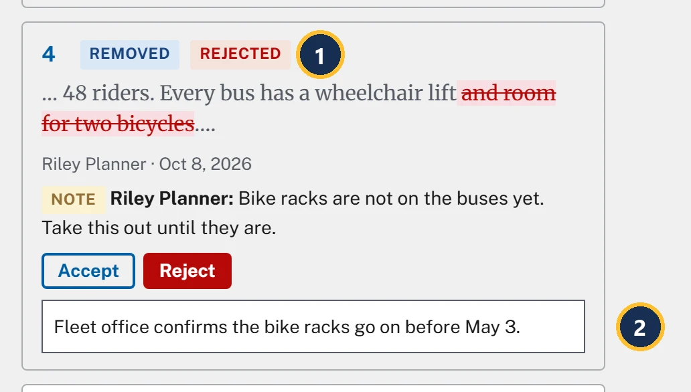
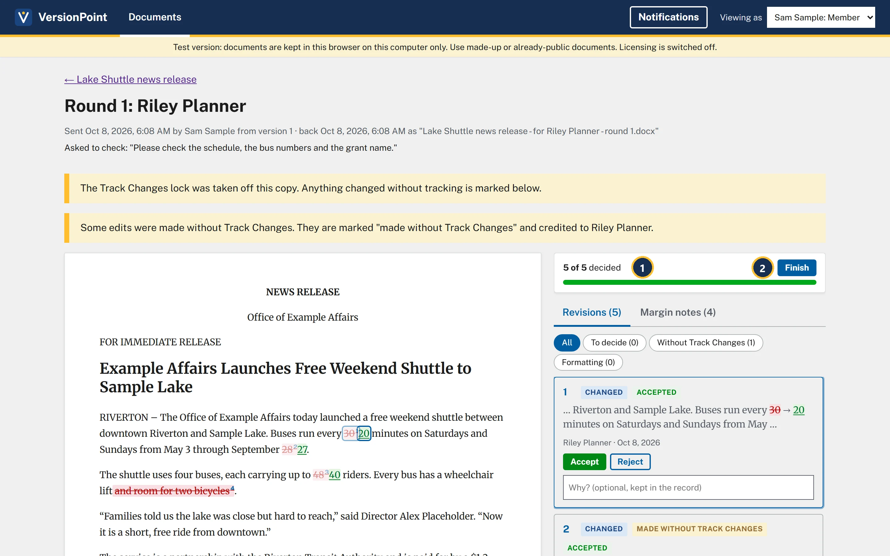

Lesson 510 minutesThe Lake Shuttle, round 1
Approve each revision
Accept or reject each of Riley's five revisions, give a reason where it matters, and finish the round to make version 2.
Why it matters
No edit reaches the document until someone in comms accepts it, and every decision is recorded with your name. A reason takes ten seconds now and saves a meeting later, when leadership asks why the release says what it says.
Watch
A revision card
![Revision card 3. Callout 1 marks its number, 3. Callout 2 marks its kind, Changed. Callout 3 marks the words around the edit: uses four buses, each carrying up to 48 (removed) 40 (added) riders. Every bus has a wheelchair lift, then an ellipsis. Callout 4 marks who made it and when: Riley Planner, Oct 8, 2026. Callout 5 marks the note on it: Note, Riley Planner: Seated capacity is 40. The 48 counts riders standing. Use the seated number. Callout 6 marks the Accept and Reject buttons. Callout 7 marks the box Why? (optional, kept in the record).](assets/l5-card-a.webp)
- The number. It matches the number in the document on the left.
- What kind of edit: Changed, Added, Removed or Formatting. Less often: Paragraph rewritten, Header or footer, Table row or Hidden text.
- The words around it, as they read in the copy you sent. Removed text is struck through and added text is underlined: here 48 is removed and 40 added.
- Who made the edit, and when.
- The reviewer's note on these words, when there is one. It's their reason.
- Accept and Reject.
- Why? (optional, kept in the record): your reason. It shows beside the reviewer's note in the record.
A card can also carry a tag: Made without Track Changes (lesson 4) or Was hidden in the file. Once you decide, it shows Accepted or Rejected.
Deciding
- Choose Accept or Reject on a card. Each decision is saved as you make it, so you can stop part way and come back.
- Or use the keys: click a card, then j and k move between cards, a accepts and r rejects.
- Accept all remaining (5) and Reject all remaining decide every card you haven't decided yet. Reject all remaining asks first: Reject all 5 remaining revisions?
- When a file brings formatting changes, Accept formatting only takes just those.

- Rejected. The bicycle line stays in the release. Riley's note on those words shows on the card, so you can weigh the reason before you decide.
- Your reason. It's saved when you leave the box, for example by pressing Enter or going on to the next card.

- 5 of 5 decided.
- Finish makes the next version from your decisions. It stays greyed out until every revision is decided.
![The document page after Finish. Callout 1 marks the version list: Version 2 (latest): After review by Riley Planner. The release reads every 20 minutes, through September 27, up to 40 riders, still has and room for two bicycles, and ends the grant paragraph with The grant pays for the shuttle through [insert year]. Riley's notes are highlighted in the text and listed beside it under Notes (4). Callout 2 marks the round under Rounds: Round 1: Riley Planner, 4 of 5 accepted, Sent Oct 8, 2026, back Oct 8, 2026, 1 edit without Track Changes, 4 notes, made version 2.](assets/l5-version2-a.webp)
- Version 2 (latest): After review by Riley Planner.
- The finished round: 4 of 5 accepted, with 1 edit without Track Changes · 4 notes · made version 2.
The sample release, Riverside Trail opening (sample), uses the same page for the tracked changes it arrived with: Tracked changes in the imported file, with two Changed cards from Jordan Reviewer. Decide them the same way.
Try it
Start on the document page for Lake Shuttle news release, where lesson 4 left it: Riley Planner's copy is back. The decisions are the practice release's plan.
- On the document page, choose Decide revisions. The round page opens at 0 of 5 decided, and Finish is greyed out.
- Click card 1 (30 → 20) and press a. Card 1 shows Accepted.
- On card 2 (September 28 → 27, made without Track Changes), choose Accept. Riley's date is right, so it's accepted like any other edit.
- On card 3 (48 → 40, with Riley's note on seated capacity), choose Accept.
- On card 4 (removes and room for two bicycles, with Riley's note that the bike racks aren't on yet), choose Reject. In its Why? (optional, kept in the record) box, type Fleet office confirms the bike racks go on before May 3. and press Enter.
- On card 5 (adds The grant pays for the shuttle through [insert year].), choose Accept. The year comes later: you'll catch it in lesson 7. The page shows 5 of 5 decided, and Finish is ready.
- Choose Finish. The document page opens on Version 2 (latest): After review by Riley Planner, and Rounds shows Round 1: Riley Planner, 4 of 5 accepted.
Check your work
![The body of version 2: Buses run every 20 minutes on Saturdays and Sundays from May 3 through September 27. The shuttle uses four buses, each carrying up to 40 riders. Every bus has a wheelchair lift and room for two bicycles. The Director's quote is unchanged. The service is a partnership with the Riverton Transit Authority and is paid for by a $1.2 million Clean Commute Grant. The grant pays for the shuttle through [insert year]. The phrases up to 40 riders, and room for two bicycles, and Clean Commute Grant are highlighted because notes are on them.](assets/l5-check.webp)
Watch out for
Quick check
Pick an answer to see why it is or isn't right. Nothing is scored or sent anywhere.
Question 1
Riley changed September 28 to 27 without Track Changes. Should you reject it because it wasn't tracked?
Question 2
Riley removed the bike line because the racks aren't on yet. You know they will be by launch. What do you do?
Question 3
You've decided four of five revisions and have to leave for a briefing. Is your work lost?
Lesson 6 follows Riley's notes into version 2.